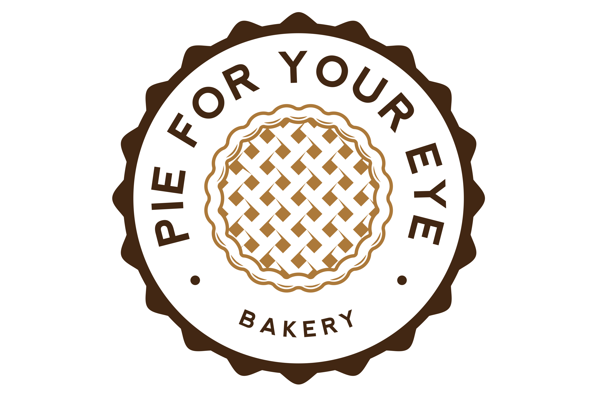

Chad Nedin
Aspiring to Create and Innovate
This site houses a collection of projects and research that I have been involved on. I am very passionate about tech, and enjoy being creative. Currently I am employeed as a Researcher for IoT related things with The Water Centre Research Department at Lambton College, On. Please connect with me through social media, email or phone.
Experience
Researcher (IoT) - Lambton Water Centre
Working on multiple IoT projects with the Lambton Water Centre department that is part of Lambton College's Applied Research. These projects include: - Remotely monitoring and controlling a water treatment system for residential use. By utilizing Raspberry Pi, Arduino, and Rex Controls. - Innovative flood monitoring project, to prevent flooding around the St.Clair river and Lake Huron. This project utilizes many different components from sensors to micro controllers and computers.
Web and Mobile App Development
On my personal time I actively utilize the programming langauges I develop interest for. Usually these revolve around Web and Mobile design. But I also have a interest in game development, and the Internet of Things (IoT).
Education
Lambton College
GPA: 3.27
Skills
- Mobile-First, Responsive Design
- Cross Browser Testing & Debugging
GitHub Activity Stream
Portfolio
E-commerce Site
jQuery, JSON and Bootstrap Front-End Site

Toronto's DementiaHack Project
MVC StoreFront with ASP.NET, C#, and Bootstrap
Lambton Tech Research
Testing out the Ultrasonic sensor + raspberry pi to measure the distance of the sensor to the current surface water level. Used a flotation device within the PVC-pipe to give a accurate reading. The piece used is around 1.8 cm off the surface of the water.